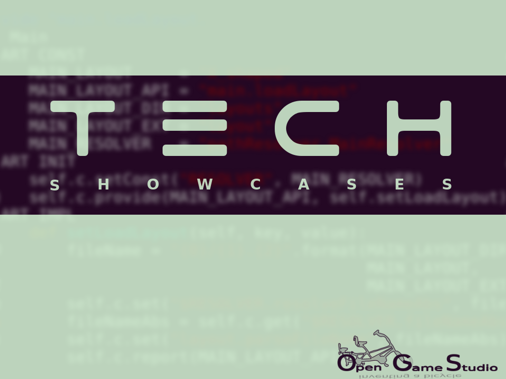

2016-10-31 00:00

In this article, we take another look at 2015-2016 live sessions' format and introduce a new showcase format for 2017.
2015 and 2016: live sessions.
As you know, we use live sessions to show the state of our technology and create a small functional game from scratch. We have conducted four live sessions in the past year, which gave birth to the following small games:
| **№** | **Created game** | **Live session date** |
|---|---|---|
| 1 | Whac-a-mole | November 2015 |
| 2 | Rolling ball | February 2016 |
| 3 | Domino | May 2016 |
| 4 | Mahjong Solitaire | September 2016 |
We spent four months to prepare for these live sessions. It has been an extremely useful experience for us. However, 2017 will have only 2 live sessions. Why? We want to spend more time on actual development!
2017: live sessions + technical previews.
Starting next year, we will be doing technical previews twice a year. A technical preview is another way to show the state of our technology, but without creating new games and conducting live sessions.
Here's an approximate schedule of technical previews and live sessions for 2017:
| **№** | **Month** | **Showcase type** | **Topic** |
|---|---|---|---|
| 1 | January | Technical preview | Android platform support |
| 2 | April | Live session | Android game creation |
| 3 | July | Technical preview | To be announced |
| 4 | October | Live session | To be announced |
That's it for taking another look at 2015-2016 live sessions' format and introducing the new showcase format for 2017.